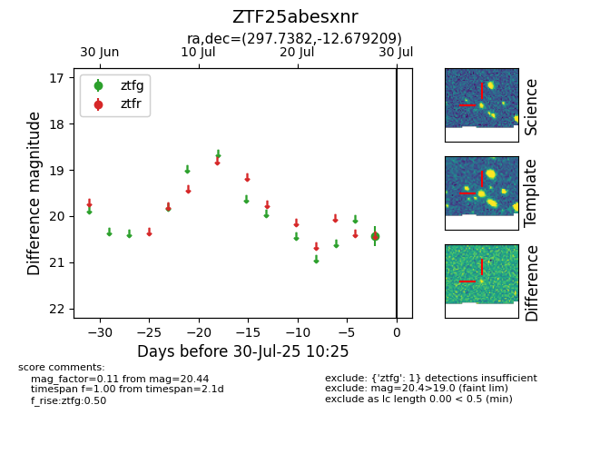

Target ZTF25abesxnr at 2025-07-30 10:25, see:
FINK: fink-portal.org/ZTF25abesxnr
Lasair: lasair-ztf.lsst.ac.uk/objects/ZTF25abesxnr
ALeRCE: alerce.online/object/ZTF25abesxnr
alt names
ZTF25abesxnr (ztf,fink)
coordinates:
equatorial (ra, dec) = (297.7382,-12.67921)
galactic (l, b) = (28.0150,-18.84678)
photometry
last ztfg=20.44
1 ztfg detections
